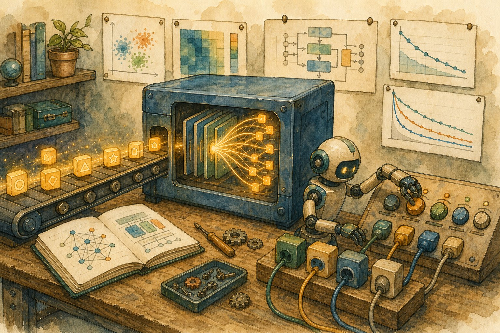

Transformers lab: build, fine-tune & serve
Theory ends here; hands begin. Tokenize text, run a training loop, fine-tune with LoRA on one GPU, evaluate honestly, and serve the result behind an API.

Figure 46.1 — The applied loop: tokenize → train (or adapt) → evaluate → serve → monitor.
1. Tokens in, tokens out
- Subword tokenizers (BPE/WordPiece/SentencePiece) split rare words: “unhappiness” → “un” + “happiness”. Same tokenizer at train and serve — or garbage.
- Context budget: max tokens = prompt + completion. Long docs need chunking (Ch 42), not hope. Count with
len(tokenizer.encode(text)). - Special tokens: BOS/EOS, padding, chat templates (
apply_chat_template). Wrong template = a model that “forgot” instruction-following.
from transformers import AutoTokenizer, AutoModelForCausalLM
tok = AutoTokenizer.from_pretrained("Qwen/Qwen2.5-0.5B-Instruct")
msgs = [{"role": "user", "content": "Summarise refunds in 1 line."}]
ids = tok.apply_chat_template(msgs, return_tensors="pt") # template matters!
model = AutoModelForCausalLM.from_pretrained("Qwen/Qwen2.5-0.5B-Instruct")
out = model.generate(ids, max_new_tokens=40, temperature=0.3)
print(tok.decode(out[0][ids.shape[1]:]))2. Fine-tune cheap: LoRA/QLoRA
- Data format: instruction → response pairs (JSONL). 1k–10k clean examples beat 1M noisy ones. Validate with a held-out golden set (Ch 42).
- Knobs that matter: rank r (8–64), learning rate (~1e-4), epochs (1–3, watch eval loss), max seq length (truncate + pack).
- Failure smell: train loss ↓ eval loss ↑ = overfitting (cut epochs, add data); gibberish = wrong template/tokenizer.
3. Evaluate, then serve
- Eval stack: golden Q&A (exact/LLM-judge) + behavioural tests + red-team prompts. Track every run in MLflow/W&B with data hash (Ch 43).
- Serve: vLLM / TGI / Ollama for throughput (paged attention, batching); quantise (AWQ/GPTQ) for cost; stream tokens for UX.
- Guardrails in front: input filters (PII, injection), output checks (citations, refusals), rate limits, cost-per-request dashboards.
Lab safety
Never fine-tune on secrets/PII you can’t afford to leak — models memorise. Keep eval data out of training (contamination invalidates every claim). Version tokenizer + adapter + base together; “same model” with a different template is a different model.
Short notes
Tokenize with the right chat template; budget context. LoRA/QLoRA = frozen 4-bit base + small trainable adapters; clean pairs, 1–3 epochs, watch eval loss. Eval on golden + behavioural + red-team sets, track runs, serve via vLLM/TGI quantised with guardrails and cost dashboards.
Point notes
- Template + tokenizer are versioned.
- LoRA rank 8–64, lr ~1e-4.
- Clean 1k > noisy 1M.
- Eval: golden + behavioural + red.
- Serve quantised, stream, guard.
MCQs
5 questions1. LoRA fine-tuning works by:
2. A fine-tuned chat model suddenly babbles. First suspect:
3. Eval loss rises while train loss falls. Diagnosis + fix:
4. vLLM/TGI + quantization (AWQ/GPTQ) in serving gives you:
5. Training on your eval questions (contamination) means:
Practice questions
P1. You have one 24 GB GPU and 5k support Q&A pairs. Give the exact fine-tune recipe.
Base: 7–8B instruct model in 4-bit (QLoRA). Format pairs with the model’s chat template; hold out 300 for golden eval. LoRA r=16, alpha=32, lr 1e-4, 2 epochs, seq-len 2048 with packing, eval every 200 steps + early stop. Track in W&B; eval: golden judge-score + behavioural + red-team. Merge adapters, quantise AWQ, serve on vLLM.
P2. Inference costs 10× budget at 50 req/s. Optimise in order.
(1) Measure: tokens in/out per request — trim prompts, cache system/embeddings. (2) Serve on vLLM with continuous batching; quantise to AWQ. (3) Distil to a smaller model for easy slices; route hard ones up. (4) Scale-to-zero + autoscale; alert on cost-per-1k-requests. (5) Revisit: do all 50 req/s need the big model?
P3. Your RAG + fine-tuned model fails only on table-heavy PDFs. Debug.
Likely retrieval/chunking, not weights: tables split across chunks lose structure. Fix: table-aware parsing (keep markdown tables whole), larger overlap, metadata filters, hybrid BM25 for cell values, reranker. Add table-QA slice to golden eval. Fine-tuning can’t rescue unretrieved context.